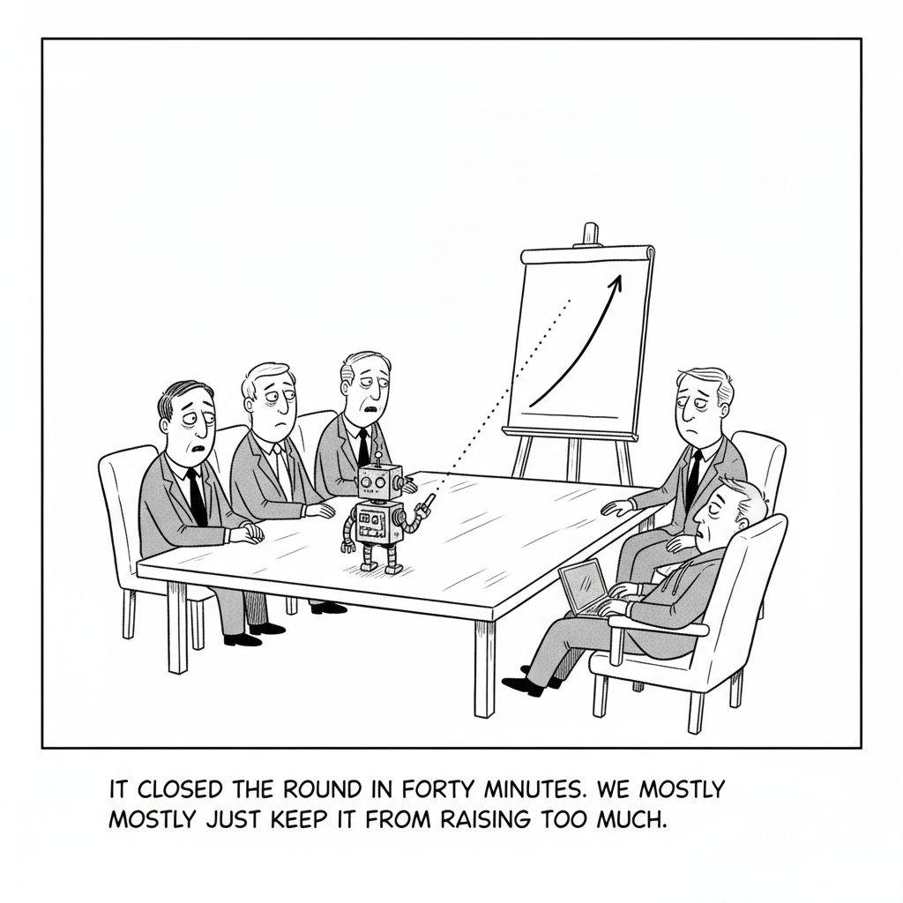

OpenAI unveiled GPT-5.6 in three variants, Sol, Terra, and Luna, emphasizing improved efficiency, cybersecurity, and agentic coding. The lineup is positioned squarely against Anthropic in enterprise and developer workloads.
The three-size split is the story's tell. Rather than shipping one monolithic model, OpenAI is offering a tiered lineup that lets buyers match cost to the job, a direct answer to the same efficiency pressure that has come to dominate the frontier. With Meta and open-source challengers crowding the coding market on price, GPT-5.6's pitch is less about a single benchmark than about giving developers a range they can route between.
OpenAI's second-in-command is moving to a part-time advisory role after an extended medical leave, leaving a leadership gap as the company eyes an IPO and races Anthropic.
AI Culture · Cartoon

"It closed the round in forty minutes. We mostly just kept it from raising too much."
Lyzr handed its Series B to an in-house agent, SivaClaw, which fielded investor questions and tracked engagement hands-free, reportedly drumming up $400M in interest for a $100M round.
The New York Times claims OpenAI concealed internal tools and datasets that could identify copyrighted journalism in ChatGPT outputs, and has filed for sanctions in the escalating suit.
Meta's Muse Spark 1.1 is a multimodal model tuned for agentic coding and priced aggressively at $1.25 per million input tokens, taking direct aim at OpenAI and Anthropic.
Matthew Berman puts GPT-5.6 through multi-day agentic builds, an Excel clone and a Minecraft clone, and finds standout browser and computer use plus lower pricing across its three model sizes. Watch the full study guide.
OpenAI positioned GPT-5.6 as the preferred engine for Microsoft's 365 Copilot, pushing back on reports that Microsoft is leaning on its own in-house models to cut costs.
Ollama, which lets developers run models locally, raised a $65M Series B led by Theory Ventures. It now reaches nearly 9M monthly users across 85% of the Fortune 500.
Google's My Ad Center will start flagging ads created or edited with AI, auto-enabling disclosure for its own generative tools while asking other advertisers to self-declare.
Anthropic is asking the public for its hardest questions about AI, launching a public record and institute and committing to show its work as it addresses concerns about jobs, agency, and misuse.
Scramble
Unscramble four words from today's headlines. The red letter in each feeds the bonus word below.
S L E O D M
GPT-5.6 arrives as a new family of these (Sol, Terra, Luna).
N T G A S E
Lyzr let one of these run its $100M fundraise.
W R O S E B R
OpenAI is shutting Atlas but keeps growing this ambition.
A M L A L O
Open-source tool for running models locally; raised $65M.
Bonus (4 letters): the red letters unscramble to a word for what a superseded model becomes.
OpenAI priced GPT-5.6 Sol at $5 per million input tokens and claimed a coding-agent score of 80, then said it beats Anthropic's Fable 5 on the Agents' Last Exam by 13.1 points, 53.6 to Fable's 40.5, while burning less than half the output tokens and costing roughly a third less. Within hours Simon Willison had tested Sol and shrugged that it "hasn't struck me as better than Fable at the kind of complex coding tasks" he cares about, and OpenAI itself published an audit arguing that 30% of a popular coding benchmark is broken. That gap, between the launch-day numbers and what the model actually feels like to use, is the thread running through all fifteen of today's stories.
▶Listen to the Digest~6 min
The GPT-5.6 launch
Three models, aggressive pricing. OpenAI shipped GPT-5.6 as Luna, Terra, and Sol (smallest to largest) at $1/$6, $2.50/$15, and $5/$30 per million input/output tokens, each with a million-token context window, 128K max output, and a February 16, 2026 knowledge cutoff. Sam Altman called Sol "54% more token efficient" on coding, and OpenAI billed the family as its "strongest cybersecurity model yet" for threat modeling and blue-team work.
New primitives, not just a new model. The API adds Programmatic Tool Calling (the model writes and runs JavaScript to orchestrate its own tool calls), native multi-agent subagents for parallel work, and explicit prompt-cache breakpoints, a signal that OpenAI is competing on agent plumbing, not just raw scores.
The Microsoft tell. OpenAI took pains to say GPT-5.6 is the "preferred model" for Microsoft 365 Copilot, pushback against weeks of reporting that Microsoft is routing more work to its own in-house models to cut costs. The reassurance is louder than the relationship it describes.
What it looks like in practice. Matthew Berman's hands-on (today's video study guide) put Sol through multi-day agentic builds, an Excel clone and a Minecraft clone, and landed on the same split verdict: genuinely strong browser and computer use at a lower price, but not the clean generational leap the benchmarks imply.
The challengers and the commoditization
Meta joins on price. Muse Spark 1.1, Meta's first Spark model with API access, is a multimodal coding model tuned for agentic tool use and computer use, priced at $1.25 per million input tokens, undercutting almost everyone and turning coding models into a commodity race.
Local models keep winning developers. Ollama raised a $65M Series B led by Theory Ventures ($88M total) and now serves nearly 9M monthly users across 85% of the Fortune 500, evidence that a large slice of real usage is quietly running on models people download rather than rent.
The agent ran the round. Lyzr let its own agent, SivaClaw, orchestrate a $100M Series B at a $500M valuation, fielding questions from 130-plus investors, drafting memos, and tracking which pitch slides held attention, reportedly generating $400M in interest with almost no founder pitching. It is a marketing stunt and a genuine glimpse of agent-run workflows at the same time.
OpenAI's turbulent week underneath the launch
A leadership gap. Fidji Simo is stepping down from OpenAI's No. 2 role to a part-time advisory seat after an extended medical leave, opening a hole at the top just as the company eyes an IPO.
A copyright escalation. The New York Times says OpenAI hid internal tools and datasets that could identify copyrighted journalism in ChatGPT outputs, and has filed for sanctions, a discovery fight that could shape how every frontier lab documents training data.
A strategic retreat. OpenAI is shutting down its Atlas browser after less than a year, folding agentic browsing into ChatGPT's desktop app and a new Chrome extension. Even the browser ambition survives; the standalone product did not. And Willison notes OpenAI's own explanation of cloud-vs-desktop "ChatGPT Work" is muddled enough that users cannot easily tell the versions apart.
Policy and the values counterweight
Disclosure creeps in. Google will now flag ads made or edited with AI in My Ad Center, auto-enabling disclosure for its own generative tools and asking other advertisers to self-declare, a small but telling move toward provenance as a default.
Anthropic asks first. Anthropic launched "Inviting Hard Questions," having already surveyed 52,000 Americans and 81,000 Claude users across 159 countries and 70 languages about their hopes and fears (jobs, agency, misuse), and stood up an Anthropic Institute to study them in public.
The Throughline
Today is a referendum on what a benchmark is worth. OpenAI's launch is a masterclass in favorable measurement: pick the evals where Sol leads (Agents' Last Exam, the Coding Agent Index), pair each number with a cost-per-token comparison, and let the pricing do the rhetorical work. It is effective because it is partly true, Sol really is cheaper and more token-efficient than Fable on those tasks. But the same company that published a 53.6 also published an audit arguing that 30% of SWE-Bench Pro is broken, which is a quiet admission that the industry's yardsticks bend to whoever is holding them.
Willison's shrug matters precisely because it isn't a number. When a careful practitioner says a state-of-the-art model "hasn't struck me as better" on the work he actually does, he is describing the widening gap between leaderboard capability and felt capability. That gap is where the rest of the day lives. Meta's $1.25 pricing, Ollama's 9M local users, and even Lyzr's agent-run raise all assume the same thing OpenAI's launch tries to deny: that frontier scores are no longer scarce, so the fight moves to cost, distribution, and workflow.
And notice what OpenAI had to spend its launch-day attention on. Not just the model, but reassuring Microsoft it is still "preferred," sunsetting a browser, absorbing a sanctions motion from the Times, and losing its No. 2. A company launching from strength does not usually need to defend that many flanks in a single news cycle. The model is genuinely good; the position around it is genuinely contested.
The Bigger Picture
If 2025 was the year capability was the product, 2026 is shaping up as the year capability becomes the table stakes and everything around it becomes the product. When Luna costs a dollar, Muse Spark costs $1.25, and 85% of the Fortune 500 already runs Ollama, no single model is a moat. The durable advantages are shifting to the things a benchmark cannot score: trustworthy provenance (Google's ad labels), legitimacy and governance (Anthropic's public survey), legal defensibility of training data (the Times fight), and the surrounding scaffolding that turns a raw model into a reliable agent.
That is why the two labs look like they are running different plays. OpenAI is competing on price and benchmarks while managing a crowded set of institutional risks in public. Anthropic is spending its news cycle asking 52,000 people what scares them and promising to show its work. Both are bets about where the next premium sits. One says the winner is whoever posts the best number for the lowest price; the other says the winner is whoever the public, and eventually regulators, decide to trust. The Lyzr stunt is the wild card in between, hinting at a near future where the customer evaluating your model isn't a human reading a leaderboard at all, but another agent optimizing for cost and outcome.
What to Watch
Whether "preferred model" holds. If Microsoft keeps quietly shifting Copilot to in-house models despite today's reassurance, it signals that even OpenAI's flagship distribution partner treats frontier models as swappable commodities.
The Times discovery ruling. A sanctions decision over hidden tools and datasets could set the disclosure standard every lab has to meet, and reframe training-data provenance from an ethics debate into a litigation liability.
Benchmark credibility. Now that OpenAI has openly called 30% of a major coding eval broken, watch for buyers to lean harder on their own private evals, which erodes the persuasive power of launch-day scores across the board.
Go Deeper
GPT-5.6 Is FINALLY HERE (WOAH) — Matthew Berman's hands-on is the practical counterweight to the launch numbers. The study guide walks through his multi-day agentic builds (an Excel clone and a Minecraft clone), where Sol's browser and computer use genuinely impress, where it stumbles, and how its three sizes and lower pricing actually stack up once you stop reading the benchmark chart and start using the thing.